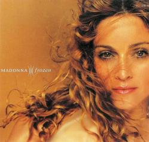

|  |
|
(Lyrics) You only see what your eyes want to see How can life be what you want it to be You're frozen When your heart's not open You're so consumed with how much you get You waste your time with hate and regret You're broken When your heart's not open Mmmmmm, if I could melt your heart Mmmmmm, we'd never be apart Mmmmmm, give yourself to me Mmmmmm, you hold the key Now there's no point in placing the blame And you should know I suffer the same If I lose you My heart will be broken Love is a bird, she needs to fly Let all the hurt inside of you die You're frozen When your heart's not open Mmmmmm, if I could melt your heart Mmmmmm, we'd never be apart Mmmmmm, give yourself to me Mmmmmm, you hold the key You only see what your eyes want to see How can life be what you want it to be You're frozen When your heart's not open Mmmmmm, if I could melt your heart Mmmmmm, we'd never be apart Mmmmmm, give yourself to me Mmmmmm, you hold the key If I could melt your heart. |
(Letra en Español) Tú sólo ves lo que tus ojos quieren ver Porqué la vida tiene que ser como tú quieres que sea Estás congelado Cuando tu corazón está cerrado Estás tan satisfecho con todo lo que tienes Desperdicias tu tiempo con odio y lamentos Estás destrozado Cuando tu corazón está cerrado Mmmm si yo pudiera derretir tu corazón Mmmmmmm, nunca nos separaríamos Mmmmmm, entrégate a mí Mmmmmm, tienes la llave Ahora no hay razón para culparse Y deberías saber que so sufrí lo mismo Si te pierdo Mi corazón se romperá El amor es un ave, que necesita ser libre Deja que todo el dolor en tu interior muera Estás congelado Cuando tu corazón no está abierto Mmmm si yo pudiera derretir tu corazón Mmmmmmm, nunca nos separaríamos Mmmmmm, entrégate a mí Mmmmmm, tienes la llave Tú sólo ves lo que tus ojos quieren ver Porqué la vida tiene que ser como tú quieres que sea Estás congelado Cuando tu corazón está cerrado Mmmm si yo pudiera derretir tu corazón Mmmmmmm, nunca nos separaríamos Mmmmmm, entrégate a mí Mmmmmm, tienes la llave Si yo pudiera fundir tu corazón. |